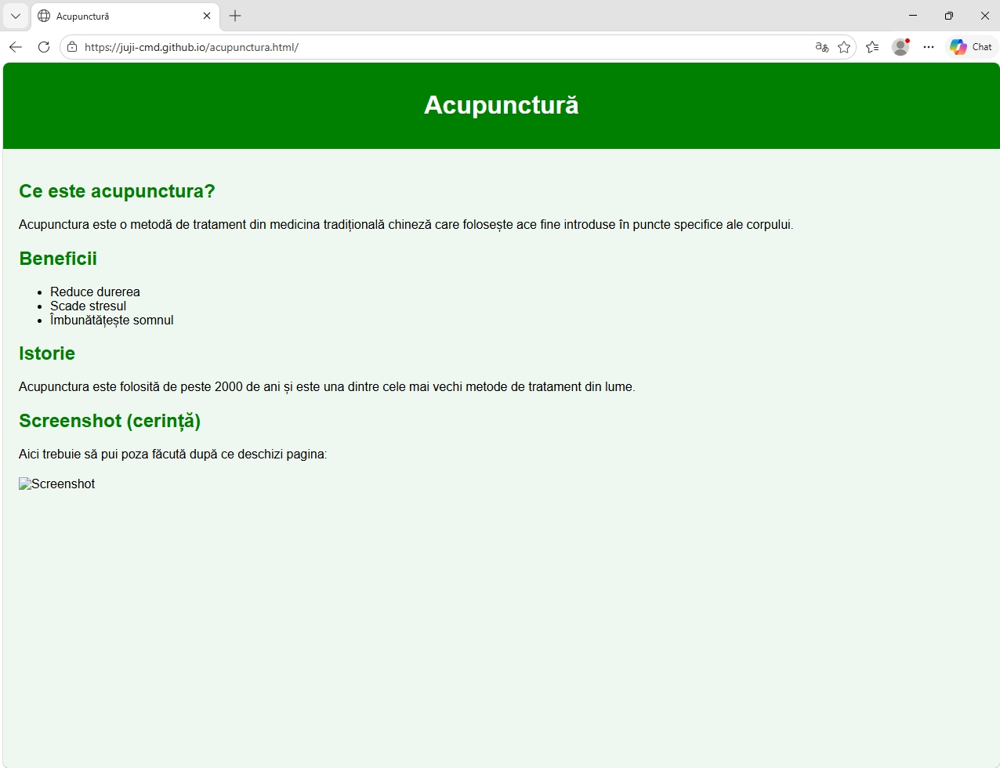

Acupunctura este o metodă de tratament din medicina tradițională chineză care folosește ace fine introduse în puncte specifice ale corpului.
Acupunctura este folosită de peste 2000 de ani și este una dintre cele mai vechi metode de tratament din lume.
Aici trebuie să pui poza făcută după ce deschizi pagina:
